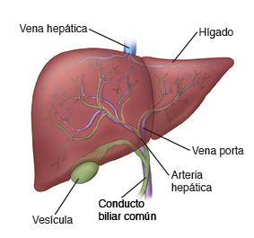

HigadoEl hígado es un órgano que está presente tanto en el ser humano como en el resto de animales vertebrados. El hígado humano tiene un peso medio de 1500 g,1 está situado en la parte superior derecha del abdomen, debajo del diafragma, segrega la bilis, esencial para la digestión de las grasas, también cuenta con otras muchas funciones,2 entre ellas la síntesis de proteínas plasmáticas, almacenamiento de vitaminas y glucógeno y función desintoxicante. Sus células principales son los hepatocitos y uno de sus rasgos más característicos es que tiene la capacidad para regenerarse.3 El hígado es responsable de eliminar de la sangre diferentes sustancias que puedan resultar nocivas para el organismo, entre ellas el alcohol, convirtiéndolas en inocuas. La ausencia de hígado o su falta de funcionamiento es incompatible con la vida.456 Clica aqui para saber mas Volver |